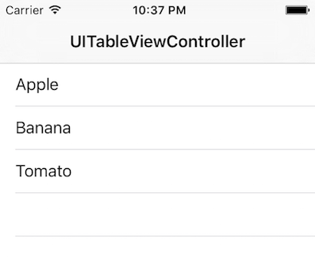

UITableViewController QML Type
Provides a UIViewController for displaying lists. More...
| Import Statement: | import . |
Detailed Description
UITableViewController is a UIViewController that provides convenience for displaying a list and is comparable to the QtQuick ListView item.
import jsee23.qmluikit 0.1 UIWindow { UINavigationController { initialViewController: UITableViewController { title: "UITableViewController" model: [ "Apple", "Banana", "Tomato" ] delegate: UITableViewCell { textLabel: modelData } } } }

The style and content of the list items are defined through the delegate property and its UITableViewCell item.
Property Documentation
This property holds the number of items in the UITableViewController.
model : model |
This property holds the model providing data for the list. The model provides the set of data that is used to create the items in the view. Models can be created directly in QML using ListModel, XmlListModel, VisualItemModel or JavaScript lists.
An optional property to arrange the list items in sections. By default, all the list items are displayed in one section without a title.
UITableViewController { model: [ "Anna", "AJ", "Boris", "Ben", "Becky" ] sections: [ UITableViewSection { title: "A" count: 2 }, UITableViewSection { title: "B" count: 3 } ] }
See also UITableViewSection.